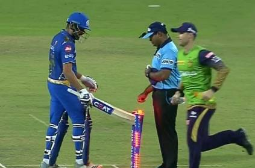
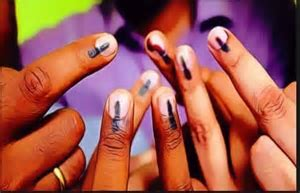

TOP HEADLINES

| Vijay Mallya says he feels sorry for Jet Airways, ready to pay even from Indian jail READ MORE... |
Watch: Angry With Umpire's Decision, Rohit Sharma Hits Stumps With Bat READ MORE... |
 |
|  | Voting On 72 Seats Today, NDA Took Home 56 Last Time: 5-Point Guide READ MORE... |